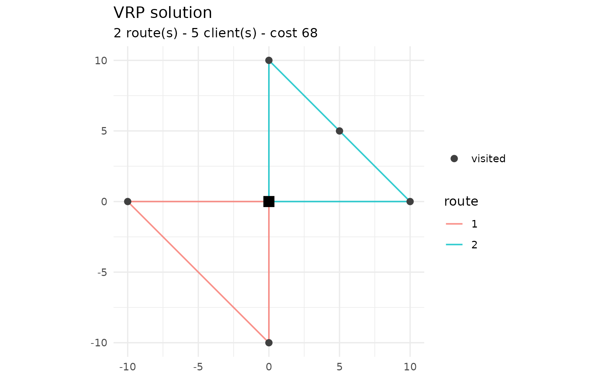

Standard instance formats
vrpr ships native readers for the two most common
benchmark formats, with no Python dependency. Both return a
vrpr_model you can solve right away.
VRPLIB / TSPLIB
read_vrplib() reads CVRP (and VRPTW) instances in the
VRPLIB/CVRPLIB format – for example the well-known X set of Uchoa et
al. It supports Euclidean coordinates
(EDGE_WEIGHT_TYPE : EUC_2D) and reads time-window and
service-time sections when present.
path <- system.file("extdata", "sample-n6-k2.vrp", package = "vrpr")
model <- read_vrplib(path)
#> ✔ Read "sample-n6-k2": 5 clients, 1 depot, capacity 30, 2 vehicles.
model
#>
#> ── VRP model ───────────────────────────────────────────────────────────────────
#> • 1 depot
#> • 5 clients
#> • 1 vehicle type
res <- vrp_solve(model, stop = max_iterations(300), seed = 1, display = FALSE)
plot(res)
The number of vehicles is taken from the
VEHICLES/TRUCKS field, or from the
-k<n> suffix in the instance name, or — as a last
resort — the number of clients. You can always override it with
num_vehicles =.
Solomon
read_solomon() reads VRPTW instances in the Solomon (and
Gehring-Homberger) format: a VEHICLE section with the fleet
size and capacity, and a CUSTOMER table with coordinates,
demand, time window and service time. Customer 0 is the depot.
path <- system.file("extdata", "sample-solomon.txt", package = "vrpr")
read_solomon(path) |>
vrp_solve(stop = max_iterations(300), seed = 1, display = FALSE) |>
cost()
#> ✔ Read "SAMPLE": 4 clients, capacity 50, 3 vehicles (VRPTW).
#> [1] 62Distances
When you do not supply explicit matrices, vrpr computes
the Euclidean distance between coordinates and rounds it half up
(floor(d + 0.5)) — the TSPLIB EUC_2D
convention, which is what the published best-known solutions assume. You
can pass your own distance and duration
matrices to vrp_problem_data() (and hence to
vrp_solve()) for road networks or asymmetric travel
times.
Parity with PyVRP
Because vrpr vendors PyVRP’s C++ core, it is faithful to
the reference solver on two levels.
Objective parity (exact). The same solution scores
identically on both sides, since they share the same C++
CostEvaluator. On the bundled sample-n6-k2
instance, the routes [[1, 2], [3, 4, 5]] cost 81 in both
vrpr and PyVRP.
Quality parity. On the X-n101-k25
instance (100 clients, known optimum 27591), a
10-second release build of vrpr reaches the optimum,
matching PyVRP, with a comparable number of iterations. The reproducible
benchmark lives in tools/benchmark/ (parity.R
drives vrpr, pyvrp_side.py the reference).
| Solver | cost | gap to optimum |
|---|---|---|
| PyVRP | 27591 | 0.00 % |
| vrpr | 27591 | 0.00 % |
When benchmarking, always measure a release build (
R CMD INSTALL), not the debug build ofdevtools::load_all(): the debug build compiles without optimisation and with the core’s assertions enabled, making it many times slower and distorting any throughput comparison.
The algorithm
vrpr runs the same iterated local search as PyVRP: an
initial descent, then repeated rounds of perturbation and local search,
with Late Acceptance Hill-Climbing (Burke & Bykov, 2017) as the
acceptance criterion, a restart from the best after a stretch without
improvement, and an exhaustive refinement of each new best. Penalty
weights for load, time-window and distance violations are adapted
online. Tune any of this through [ils_params()].